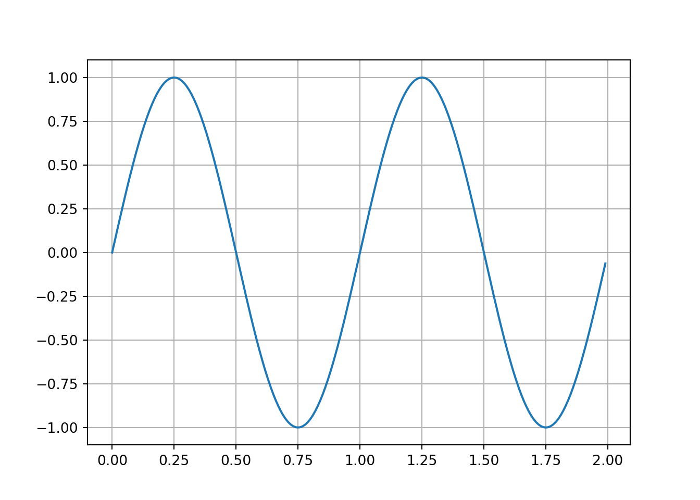
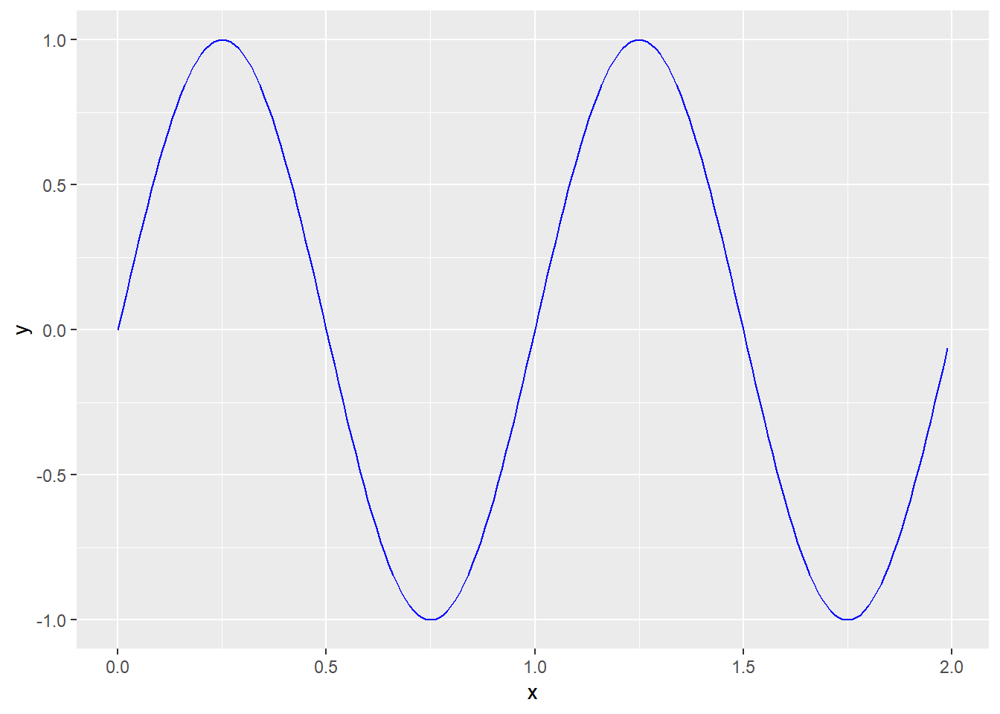
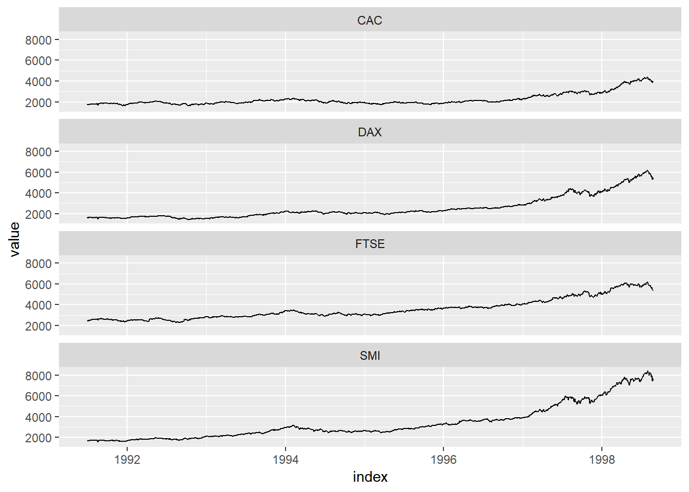
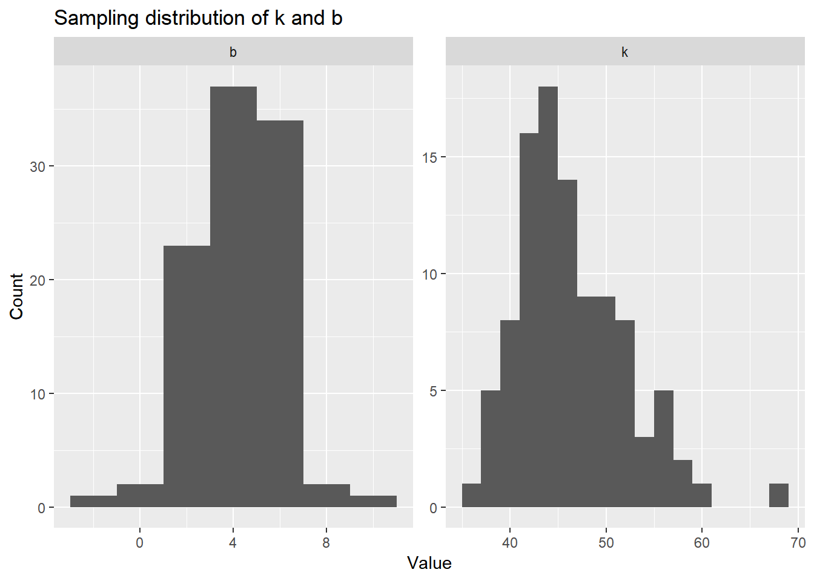
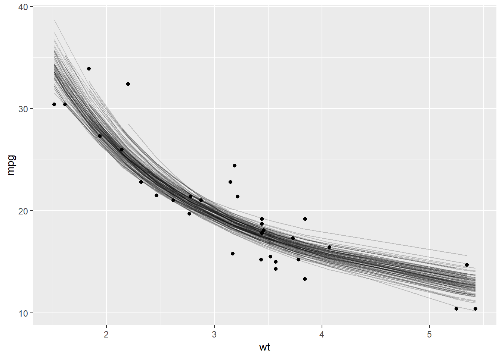
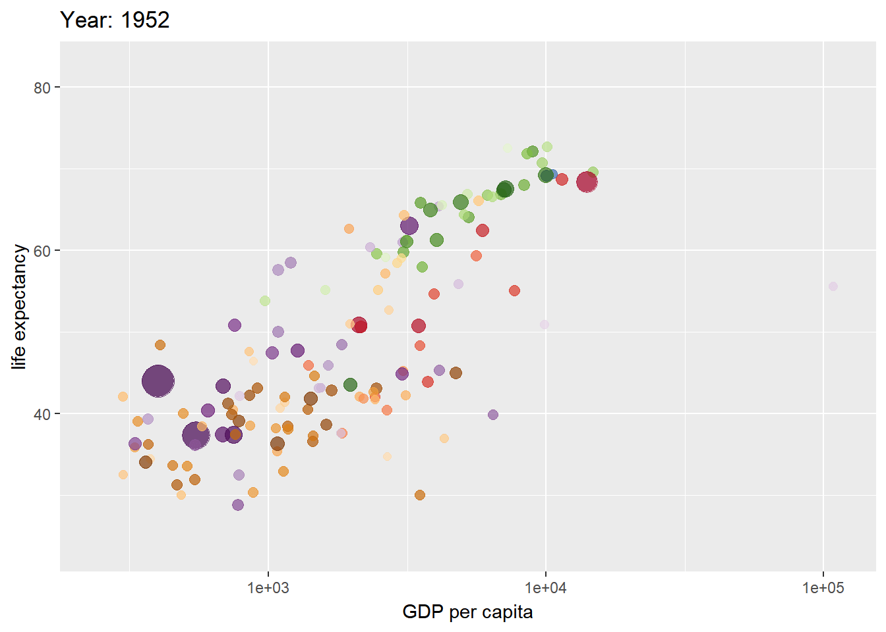
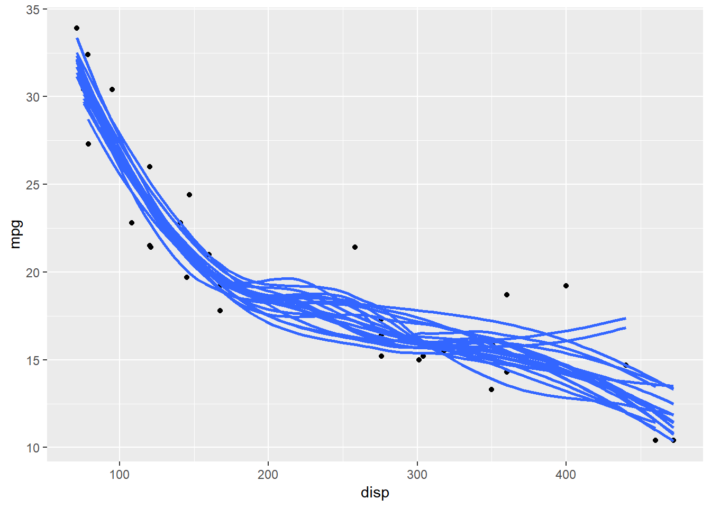
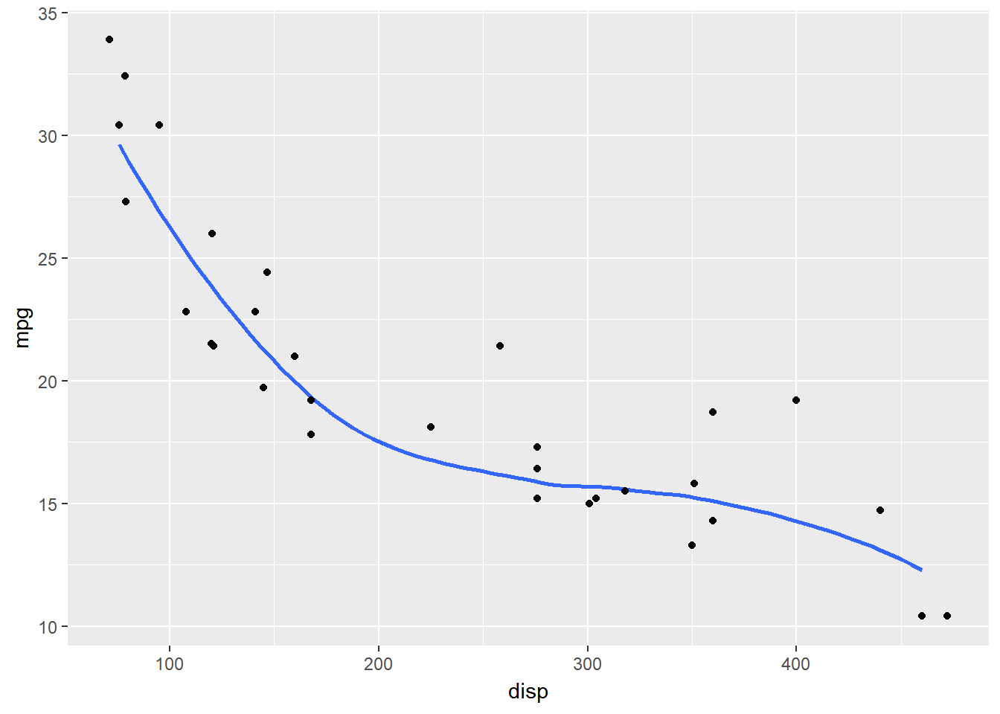

This is a notebook summarizing what I learned at the R Studio Conference 2019 Links to all the talks and slide decks,including talks on how to use R in production at scale are available at https://github.com/kbroman/RStudioConf2019Slides
Make sure the libraries being used in each section are installed.
Reproducible Examples with reprex
The reprex package allows you to create a minimal reproducible example that you can share if you are reporting an issue on Github or asking a question on stack overflow. Running the code chunk below after uncommenting will create a new web page with the code and the results that can be shared with others.
# reprex({
# x <- 1:4
# y <- 2:5
# x + y
# })Categorical data in R
Factor variables in R can be idiosyncratic
x <- c(20,20,10,40,20)
cat(x)## 20 20 10 40 20Converting this to a factor variable produces the following
xf <- factor(x)
xf## [1] 20 20 10 40 20
## Levels: 10 20 40Converting this factor back to numeric produces the following odd result
x <- as.numeric(xf)
x## [1] 2 2 1 3 2The right way to carry out this conversion is as follows
x <- as.numeric(as.character(xf))
x## [1] 20 20 10 40 20One also needs to be careful while re-ordering the levels of a factor
ratings1<- as.factor(c(rep('High',30),rep('Low',10),rep('Medium',20)))
ratings2 <- ratings1
ratings3 <- ratings1
table(ratings1)## ratings1
## High Low Medium
## 30 10 20cat('Levels: \n')## Levels:cat(levels(ratings1))## High Low MediumWe might want to change the levels of this variable to be Low,Medium,High
The next couple of approaches do not yield expected results.
levels(ratings1) <- levels(ratings1)[c(2,1,3)]
table(ratings1)## ratings1
## Low High Medium
## 30 10 20levels(ratings2) <- c('Low','Medium','High')
table(ratings2)## ratings2
## Low Medium High
## 30 10 20The correct approach here would be as follows
ratings3 <- factor(ratings3,levels=c('Low','Medium','High'))
table(ratings3)## ratings3
## Low Medium High
## 10 20 30The forcats package by Hadley Wickham makes working with factors much more straightforward.
library(forcats)
ratings1<- as.factor(c(rep('High',30),rep('Low',10),rep('Medium',20)))
ratings1 <- fct_relevel(ratings1,c('Low','Medium','High'))
table(ratings1)## ratings1
## Low Medium High
## 10 20 30Recoding the levels of the factors are also straightforward.
ratings1 <- fct_recode(ratings1,Poor='Low',Fair ='Medium',Good = 'High')
table(ratings1)## ratings1
## Poor Fair Good
## 10 20 30Plenty of other useful functions are available in the forcats package.
Defensive Coding
The testthat and assertthat packages allows us to code defensively. This is typically best practice in software engineering and makes debugging much easier.
For instance if a function is designed to accept a scalar (i.e. a vector of length 1), you may want the function to throw an error if a vector is passed into the function, so that you can adjust the function appropriately.
library(assertthat)
is_odd <- function(x) {
assert_that(is.numeric(x), length(x) == 1)
x %% 2 == 1
}
print(is_odd(3))## [1] TRUEprint(is_odd(2))## [1] FALSE#is_odd(c(1,4)) ##Throws an error##The see_if function returns a logical value and an error message as an attribute that allows execution to continue.
x <- c(1,2)
y <- 'a'
see_if(is.numeric(x), length(x) == 1)## [1] FALSE
## attr(,"msg")
## [1] "length(x) not equal to 1"see_if(is.numeric(y), length(y) == 1)## [1] FALSE
## attr(,"msg")
## [1] "y is not a numeric or integer vector"The testthat package provides functionality that is essential to software testing. This is useful if you are building packages or writing code that is meant to be used in production
library(testthat)
#Check for equality within numerical tolerance
expect_that(10,equals(10+1e-7))
###Check for exact equality - Throws an error
#expect_that(2*5, is_identical_to(10 + 1e-7))
model <- lm(mpg~wt,data=mtcars)
expect_that(model,is_a("lm"))
###Throws an error
#expect_that(model,is_a("glm"))If you are making a function you can use this to ensure that it produces warnings when expected.
# Two functions below pass
expect_that(log(-1), gives_warning())
expect_that(log(-1),
gives_warning("NaNs produced"))
# This one fails if run
#expect_that(log(0), gives_warning())New Features in R Studio 1.2
R Studio 1.2 allows incorporation of SQL, Python , RCPP, Stan etc seamlessly into your workflow. The reticulate package allows you to use Python within R Studio.
Python
Note the bit below requires R Studio 1.2 and python’s Anaconda installation. Also you might encounter the issue described here and will have to fix by adding the appropriate path to the environment variable
library(reticulate)
use_condaenv("r-reticulate")import os
os.environ['QT_QPA_PLATFORM_PLUGIN_PATH'] = 'C:/Users/learningmachine/AppData/Local/Continuum/anaconda3/Library/plugins/platforms'
import numpy as np
import matplotlib.pyplot as plt
import pandas as pd
x = np.arange(0.0,2,0.01)
y = np.sin(2* np.pi*x)
plt.plot(x,y)
plt.grid(True)
plt.show()
data = pd.DataFrame({'x':x,'y':y})A pandas dataframe can also be used within R.
library(ggplot2)
ggplot(py$data,aes(x,y))+ geom_line(col='blue') SImilarly you can embed SQL or Stan code chunks in your markdown document.
Parsnip - A tidy model interface
library(parsnip)
library(tidymodels)
library(glmnet)
library(randomForest)Parsnip is tidy version of the popular caret package being developed by Max Kuhn (who also developed caret).This package creates a unified interface to models, organizes them by model type (e.g. Logistic regression, splines etc)and generalizes how to fit them.
First create a model specification
## Linear Regression Model Specification (regression)
##
## Main Arguments:
## penalty = 0.01The computation engine can be one of lm, glmnet,stan,spark or keras. Parsnip can translate this general syntax to the model’s argument.
reg_model %>%
set_engine("glmnet")%>%
translate()## Linear Regression Model Specification (regression)
##
## Main Arguments:
## penalty = 0.01
##
## Computational engine: glmnet
##
## Model fit template:
## glmnet::glmnet(x = missing_arg(), y = missing_arg(), weights = missing_arg(),
## lambda = 0.01, family = "gaussian")Note that data is not required for the model specification. Further although glmnet requires the predictors and target to be provided as X,y matrices , parsnip allows you to use a formula.
reg_model %>%
set_engine("glmnet")%>%
fit(mpg ~ .,data = mtcars)## parsnip model object
##
##
## Call: glmnet::glmnet(x = as.matrix(x), y = y, family = "gaussian", lambda = ~0.01)
##
## Df %Dev Lambda
## [1,] 10 0.8687 0.01The whole sequence of steps from specification to prediction can be done as follows
linear_reg(penalty =0.01) %>%
set_engine("glmnet") %>%
fit(mpg~.,dat =mtcars %>% slice(1:29)) %>% # train set
predict(new_data = mtcars %>% slice(30:32)) #test set## # A tibble: 3 x 1
## .pred
## <dbl>
## 1 17.9
## 2 10.9
## 3 25.6If we want to fit the model using multiple penalty values:
preds <-
linear_reg() %>%
set_engine("glmnet")%>%
fit(mpg ~. , data = mtcars %>% slice(1:29))%>%
multi_predict(new_data = mtcars %>% slice(30:32))
print(preds)## # A tibble: 3 x 1
## .pred
## <list>
## 1 <tibble [80 x 2]>
## 2 <tibble [80 x 2]>
## 3 <tibble [80 x 2]>This produces a list of dataframes where each list contains predictions for all penalty values considered. To obtain the first 5 predictions for the second data point:
preds %>% pull(.pred) %>% pluck(2) %>% slice(1:5)## # A tibble: 5 x 2
## penalty .pred
## <dbl> <dbl>
## 1 0.00346 10.9
## 2 0.00380 10.9
## 3 0.00417 10.9
## 4 0.00457 10.9
## 5 0.00502 10.9In the cases of models like random forest where certain data dependent parameters like mtry need to be specified,the model can be specified as follows:
mod <- rand_forest(trees= 1000, mtry =floor(.preds() * 0.75)) %>%
set_engine("randomForest")
mod %>% translate()## Random Forest Model Specification (unknown)
##
## Main Arguments:
## mtry = floor(.preds() * 0.75)
## trees = 1000
##
## Computational engine: randomForest
##
## Model fit template:
## randomForest::randomForest(x = missing_arg(), y = missing_arg(),
## mtry = floor(.preds() * 0.75), ntree = 1000)Fit the model.
mod %>% fit(mpg ~ ., data = mtcars)## parsnip model object
##
##
## Call:
## randomForest(x = as.data.frame(x), y = y, ntree = ~1000, mtry = ~floor(.preds() * 0.75))
## Type of random forest: regression
## Number of trees: 1000
## No. of variables tried at each split: 7
##
## Mean of squared residuals: 5.352952
## % Var explained: 84.79As you can see, the number of predictors used is 75 % of the number of predictors in the data.
floor((ncol(mtcars) - 1) *0.75)## [1] 7Time Series in Tidyverse
Tidy and Transform the data using the tsibble package and perform modelling/forecasting using fable. tsibble is a time series version of a tibble/dataframe.
library(tidyr)
library(tsibble)
library(lubridate)We can use the EuStockMarkets data available in base R which is a ts object.
data("EuStockMarkets")as_tibble can easily convert this into a tsibble in a long format. Here the index represents time and key identifies the variable that defines the series. Here each stock index ha a unique time stamp.
eu_ts <- as_tsibble(EuStockMarkets)
print(eu_ts)## # A tsibble: 7,440 x 3 [1s] <UTC>
## # Key: key [4]
## index key value
## <dttm> <chr> <dbl>
## 1 1991-07-01 02:18:28 DAX 1629.
## 2 1991-07-02 12:00:00 DAX 1614.
## 3 1991-07-03 21:41:32 DAX 1607.
## 4 1991-07-05 07:23:05 DAX 1621.
## 5 1991-07-06 17:04:37 DAX 1618.
## 6 1991-07-08 02:46:09 DAX 1611.
## 7 1991-07-09 12:27:42 DAX 1631.
## 8 1991-07-10 22:09:14 DAX 1640.
## 9 1991-07-12 07:50:46 DAX 1635.
## 10 1991-07-13 17:32:18 DAX 1646.
## # ... with 7,430 more rowsGiven the index in seconds, the tsibble expects an entry for each second, so the index should be converted to day.
eu_ts2 <- eu_ts %>%
mutate(index = as.Date(index))
print(eu_ts2)## # A tsibble: 7,440 x 3 [1s]
## # Key: key [4]
## index key value
## <date> <chr> <dbl>
## 1 1991-07-01 DAX 1629.
## 2 1991-07-02 DAX 1614.
## 3 1991-07-03 DAX 1607.
## 4 1991-07-05 DAX 1621.
## 5 1991-07-06 DAX 1618.
## 6 1991-07-08 DAX 1611.
## 7 1991-07-09 DAX 1631.
## 8 1991-07-10 DAX 1640.
## 9 1991-07-12 DAX 1635.
## 10 1991-07-13 DAX 1646.
## # ... with 7,430 more rowsOne can also calculate the average price of a week or month as follows.
eu_ts %>%
index_by(Month = floor_date(index,'month'))%>%
group_by(key)%>%
summarize(Price = mean(value))%>% head()## # A tsibble: 6 x 3 [?] <UTC>
## # Key: key [1]
## key Month Price
## <chr> <dttm> <dbl>
## 1 CAC 1991-07-01 00:00:00 1753.
## 2 CAC 1991-08-01 00:00:00 1800.
## 3 CAC 1991-09-01 00:00:00 1871.
## 4 CAC 1991-10-01 00:00:00 1851.
## 5 CAC 1991-11-01 00:00:00 1814.
## 6 CAC 1991-12-01 00:00:00 1693.We can also check if there are gaps in the time series as follows.
has_gaps(eu_ts2)## # A tibble: 4 x 2
## key .gaps
## <chr> <lgl>
## 1 CAC TRUE
## 2 DAX TRUE
## 3 FTSE TRUE
## 4 SMI TRUEYou can get a 30 day rolling average of the process as follows. Note that the first 29 observations of the rolling mean will be NA.
eu_ts3 <- eu_ts2 %>%
group_by(key) %>%
mutate(avg_30day = slide_dbl(value,~mean(.,na.rm = TRUE),.size=30))
print(eu_ts3 %>% filter_index("1991-08-01"~"1991-09-01") )## # A tsibble: 88 x 4 [1D]
## # Key: key [4]
## # Groups: key [4]
## index key value avg_30day
## <date> <chr> <dbl> <dbl>
## 1 1991-08-02 DAX 1620. NA
## 2 1991-08-03 DAX 1620. NA
## 3 1991-08-05 DAX 1623. NA
## 4 1991-08-06 DAX 1614. NA
## 5 1991-08-08 DAX 1632. NA
## 6 1991-08-09 DAX 1630. NA
## 7 1991-08-10 DAX 1633. 1624.
## 8 1991-08-12 DAX 1627. 1624.
## 9 1991-08-13 DAX 1650. 1625.
## 10 1991-08-15 DAX 1650. 1627.
## # ... with 78 more rowsTsibble works well with ggplot2.
library(ggplot2)
ggplot(eu_ts2,aes(x=index,y=value)) + geom_line()+
facet_wrap(.~key,ncol=1)
Forecasting can be done using the fable package which is a tidy implementation of the classic forecast package by Rob Hyndman. This package is being developed by Hyndman’s student Earo Wang and is currently not available on CRAN
Model representation using Broom
Use tidy() to summarize information about models Use glance() to report goodness of fit metrics Use augment() to add information about observations
Produces outputs in a simple tibble
The code below shows what we typically get when building a model
attach(mtcars)
library(broom)
ols_fit <- lm(hp~ mpg + cyl, mtcars)
summary(ols_fit)##
## Call:
## lm(formula = hp ~ mpg + cyl, data = mtcars)
##
## Residuals:
## Min 1Q Median 3Q Max
## -53.72 -22.18 -10.13 14.47 130.73
##
## Coefficients:
## Estimate Std. Error t value Pr(>|t|)
## (Intercept) 54.067 86.093 0.628 0.53492
## mpg -2.775 2.177 -1.275 0.21253
## cyl 23.979 7.346 3.264 0.00281 **
## ---
## Signif. codes: 0 '***' 0.001 '**' 0.01 '*' 0.05 '.' 0.1 ' ' 1
##
## Residual standard error: 38.22 on 29 degrees of freedom
## Multiple R-squared: 0.7093, Adjusted R-squared: 0.6892
## F-statistic: 35.37 on 2 and 29 DF, p-value: 1.663e-08Using tidy from the broom package we get:
tidy(ols_fit)## # A tibble: 3 x 5
## term estimate std.error statistic p.value
## <chr> <dbl> <dbl> <dbl> <dbl>
## 1 (Intercept) 54.1 86.1 0.628 0.535
## 2 mpg -2.77 2.18 -1.27 0.213
## 3 cyl 24.0 7.35 3.26 0.00281Using glance
glance(ols_fit)## # A tibble: 1 x 11
## r.squared adj.r.squared sigma statistic p.value df logLik AIC BIC
## <dbl> <dbl> <dbl> <dbl> <dbl> <int> <dbl> <dbl> <dbl>
## 1 0.709 0.689 38.2 35.4 1.66e-8 3 -160. 329. 335.
## # ... with 2 more variables: deviance <dbl>, df.residual <int>Using augment gives information about each observation in the training data
augment(ols_fit)## # A tibble: 32 x 11
## .rownames hp mpg cyl .fitted .se.fit .resid .hat .sigma .cooksd
## <chr> <dbl> <dbl> <dbl> <dbl> <dbl> <dbl> <dbl> <dbl> <dbl>
## 1 Mazda RX4 110 21 6 140. 6.84 -29.7 0.0320 38.5 0.00687
## 2 Mazda RX~ 110 21 6 140. 6.84 -29.7 0.0320 38.5 0.00687
## 3 Datsun 7~ 93 22.8 4 86.7 13.3 6.28 0.121 38.9 0.00141
## 4 Hornet 4~ 110 21.4 6 139. 7.00 -28.6 0.0335 38.5 0.00668
## 5 Hornet S~ 175 18.7 8 194. 12.8 -19.0 0.112 38.7 0.0117
## 6 Valiant 105 18.1 6 148. 8.75 -42.7 0.0524 38.0 0.0243
## 7 Duster 3~ 245 14.3 8 206. 9.79 38.8 0.0656 38.2 0.0258
## 8 Merc 240D 62 24.4 4 82.3 11.6 -20.3 0.0924 38.7 0.0105
## 9 Merc 230 95 22.8 4 86.7 13.3 8.28 0.121 38.9 0.00246
## 10 Merc 280 123 19.2 6 145. 7.47 -21.7 0.0382 38.7 0.00443
## # ... with 22 more rows, and 1 more variable: .std.resid <dbl>To compare multiple models on goodness of fit:
library(purrr)
fits <- list( fit1 = lm(hp~cyl,mtcars),
fit2 = lm(hp ~ cyl +mpg, mtcars),
fit3 = lm(hp~. , mtcars))
map_df(fits,glance,.id = "model") %>% arrange(AIC)## # A tibble: 3 x 12
## model r.squared adj.r.squared sigma statistic p.value df logLik AIC BIC
## <chr> <dbl> <dbl> <dbl> <dbl> <dbl> <int> <dbl> <dbl> <dbl>
## 1 fit3 0.903 0.857 26.0 19.5 1.90e-8 11 -143. 310. 327.
## 2 fit1 0.693 0.683 38.6 67.7 3.48e-9 2 -161. 329. 333.
## 3 fit2 0.709 0.689 38.2 35.4 1.66e-8 3 -160. 329. 335.
## # ... with 2 more variables: deviance <dbl>, df.residual <int>A more realistic application for broom are cases where you want to bootstrap the parameter estimates of a model
Consider the model \[ mpg = \frac{k}{wt} + b + \epsilon, \sim Normal(0,\sigma^2) \]
To estimate the bootstrapped estimates, you can do the following
library(rsample)
boots <- bootstraps(mtcars,times=100)Function to fit non linear least squares
fit_nls_on_bootstrap <- function(split) {
nls(
mpg ~ k/wt + b,
analysis(split),
start = list(k=1,b=0)
)
}Bootstrap as follows:
boot_fits <- boots %>%
mutate(fit = map(splits,fit_nls_on_bootstrap),
coef_info = map(fit,tidy))
head(boot_fits)## # A tibble: 6 x 4
## splits id fit coef_info
## * <list> <chr> <list> <list>
## 1 <split [32/13]> Bootstrap001 <S3: nls> <tibble [2 x 5]>
## 2 <split [32/12]> Bootstrap002 <S3: nls> <tibble [2 x 5]>
## 3 <split [32/11]> Bootstrap003 <S3: nls> <tibble [2 x 5]>
## 4 <split [32/13]> Bootstrap004 <S3: nls> <tibble [2 x 5]>
## 5 <split [32/11]> Bootstrap005 <S3: nls> <tibble [2 x 5]>
## 6 <split [32/11]> Bootstrap006 <S3: nls> <tibble [2 x 5]>Get bootstrapped coefficients
library(resample)##
## Attaching package: 'resample'## The following object is masked from 'package:broom':
##
## bootstraplibrary(tidyr)
data("mtcars")
mtcars_bs <- bootstraps(mtcars,times=20)
boot_coefs <- boot_fits %>%
unnest(coef_info)
head(boot_coefs)## # A tibble: 6 x 6
## id term estimate std.error statistic p.value
## <chr> <chr> <dbl> <dbl> <dbl> <dbl>
## 1 Bootstrap001 k 41.2 3.38 12.2 3.86e-13
## 2 Bootstrap001 b 5.56 1.23 4.53 8.86e- 5
## 3 Bootstrap002 k 38.8 2.82 13.8 1.66e-14
## 4 Bootstrap002 b 6.52 1.03 6.36 5.15e- 7
## 5 Bootstrap003 k 51.7 4.80 10.8 8.12e-12
## 6 Bootstrap003 b 2.61 1.70 1.53 1.36e- 1Plot bootstrapped estimates as follows
p <- ggplot(boot_coefs,aes(estimate))+
geom_histogram(binwidth = 2) + facet_wrap(~ term,scales='free')+
labs(title = "Sampling distribution of k and b",
y = "Count",
x = "Value" )
p
We can also plot the bootstrapped predictions as follows
boot_aug <- boot_fits %>%
mutate(augmented = map(fit,augment))%>%
unnest(augmented)
ggplot(boot_aug,aes(wt,mpg))+
geom_point()+
geom_line(aes(y = .fitted,group =id),alpha =0.2)
gganimate
Package for animated graphics which extends ggplot2. Additional dependencies will have to be installed.
library(gapminder)
library(gganimate)
ggplot(gapminder, aes(gdpPercap, lifeExp, size = pop, colour = country)) +
geom_point(alpha = 0.7, show.legend = FALSE) +
scale_colour_manual(values = country_colors) +
scale_size(range = c(2, 12)) +
scale_x_log10() +
# Here comes the gganimate specific bits
labs(title = 'Year: {frame_time}', x = 'GDP per capita', y = 'life expectancy') +
transition_time(year) +
ease_aes('linear')
Hypothetical Outcome Plots
Hypothetical outcome plots provide an alternative way to visualize uncertainty by animating a finite set of individual draws rather than producing a static representation of distributions.
Load required packages.
library(rsample)
library(purrr)
library(ggplot2)
library(gganimate)
library(transformr)The plot below uses bootstrapped samples to visualize uncertainty in the trend line.
attach(mtcars)
#Draw bootstrap samples
mtcars_bs <- bootstraps(mtcars,times=20)
mtcars_bs_df <- map_df(mtcars_bs$splits, function(x){
return(as.data.frame(x))
})
mtcars_bs_df$id <- rep(c(1:20),each=nrow(mtcars))
mtcars %>%
ggplot(aes(disp,mpg))+
geom_point()+
geom_smooth(
data = mtcars_bs_df,
aes(group =id),
se = FALSE,
alpha = 0.6
)
The same can be represented using a hypothetical outcome plot as follows
mtcars_bs_df %>%
ggplot(aes(disp,mpg))+
geom_smooth(aes(group =id),se=FALSE,alpha=0.6)+
geom_point(data=mtcars)+
transition_states(id)
Datapasta
If you want to quickly copy some sample data from excel or SQL into R, you often have to convert it into csv or excel file and then import it or type it manually. Datapasta is an R Studio add in that provides a much easier alternative.
After installing the package ‘datapasta’ , simply copy the table from an excel file, go to add ins and select the appropriate option.
Here, I simply copied a table from excel using ‘Ctrl+C’ and then selected ‘Paste as data.frame’ from the add ins dropdown.
data.frame(stringsAsFactors=FALSE,
Name = c("A", "B", "C", "D", "E"),
Marks = c(87L, 35L, 76L, 34L, 86L)
)## Name Marks
## 1 A 87
## 2 B 35
## 3 C 76
## 4 D 34
## 5 E 86vctrs
This is another package from Hadley Wickham designed to make sure that outputs from functions are predictable.
Sometimes, R does not behave predictable. For instance when combining two factors..
c(factor("a"),factor("b"))## [1] 1 1Also..
today <- as.Date('2019-02-23')
tomorrow <- as.POSIXct("2019-02-23 12:00",tz = "America/Chicago")
c(today,tomorrow)## [1] "2019-02-23" "4248312-08-21"Also..
c(NULL,tomorrow)## [1] 1550944800The vctrs package formalizes the relationships between various datatypes and requires the user to be more explicit when combining different datatypes.
To summarize: Logical –> Integer –> Double Date –> Date-time Factor –>Character Ordered –> Character
library(vctrs)##
## Attaching package: 'vctrs'## The following object is masked from 'package:lubridate':
##
## new_durationWhen coercing to character , it is stricter than base R. vec_c below would throw an error
c(1.5,"a")## [1] "1.5" "a"#vec_c(1.5,"a")Instead you have to be explicit..
vec_c(1.5,"x",.ptype = character())## [1] "1.5" "x"Unlike in base R, the following works..
vec_c(factor("a"),factor("b"))## [1] a b
## Levels: a bNote the order affects the levels..
vec_c(factor("b"),factor("a"))## [1] b a
## Levels: b aSimilarly when concatenating a factor and an ordered factor…
c(factor("a"),ordered("b"))## [1] 1 1The first call below would throw an error..
#vec_c(factor("a"),ordered("b"))
vec_c(factor("a"),ordered("b"),.ptype = character())## [1] "a" "b"The date problem does not occur here..
vec_c(today,tomorrow)## [1] "2019-02-23 00:00:00 CST" "2019-02-23 12:00:00 CST"Disparate datatypes can be combined into a list
vec_c(today,factor("a"),.ptype=list())## [[1]]
## [1] "2019-02-23"
##
## [[2]]
## [1] a
## Levels: aTidy Evaluation
A tool for metaprogramming. This becomes important when you do not know the names of an object in advance and you want to build a tidyverse pipeline which operates on such objects. This is often the case when you have to operate on user inputs, say in a shiny application where you have to make indirect references with column names stored in variables or passed as function arguments.
It is tidy evaluation that really allows you to use column names below without using quotes.
attach(starwars)
starwars %>%
filter(homeworld == "Tatooine")%>%
arrange(height)%>%
select(name,ends_with("color"))## # A tibble: 10 x 4
## name hair_color skin_color eye_color
## <chr> <chr> <chr> <chr>
## 1 R5-D4 <NA> white, red red
## 2 Shmi Skywalker black fair brown
## 3 Beru Whitesun lars brown light blue
## 4 C-3PO <NA> gold yellow
## 5 Luke Skywalker blond fair blue
## 6 Owen Lars brown, grey light blue
## 7 Biggs Darklighter black light brown
## 8 Cliegg Lars brown fair blue
## 9 Anakin Skywalker blond fair blue
## 10 Darth Vader none white yellowTo evaluate an expression, the interpreter searches the environment for name-value bindings. In tidy eval, the expression is modified or the chain of searched environments is modified. This is what allows you to use unquoted variable names and work inside a dataframe. This is also referred to as non-standard evaluation.
Tidy eval can be implemented in the following ways..
- Using ‘…’
attach(mtcars)
measure_hp <- function(df,...){
df %>%
group_by(...)%>%
summarize(avg_hp = mean(hp,na.rm=TRUE))}
measure_hp(mtcars,gear)## # A tibble: 3 x 2
## gear avg_hp
## <dbl> <dbl>
## 1 3 176.
## 2 4 89.5
## 3 5 196.- Using enquo and !!(called ‘bang!bang!’ operator)
measure<- function(df,group_var,summary_var){
group_var <- enquo(group_var) #Effectively quotes the variable
summary_var <- enquo(summary_var)
df %>%
group_by(!!group_var)%>%
summarize(avg_hp = mean(!!summary_var,na.rm=TRUE))}
measure(mtcars,gear,hp)## # A tibble: 3 x 2
## gear avg_hp
## <dbl> <dbl>
## 1 3 176.
## 2 4 89.5
## 3 5 196.If you need to manipulate user input that is passed as character strings,you can do the following..
library(rlang)
group_var <- 'gear'
summary_var <- 'hp'
measure(mtcars,!!rlang::sym(group_var),!!rlang::sym(summary_var))## # A tibble: 3 x 2
## gear avg_hp
## <dbl> <dbl>
## 1 3 176.
## 2 4 89.5
## 3 5 196.Action and Selection Verbs
dplyr verbs comes in two flavors - action and selection. select is a selection verb while verbs like mutate,group_by and transmute are action verbs.
Action verbs created new vectors and modify the dataframe.Selection verbs look up the position of the columns in the dataframe and re-organizes the dataframe.
Selection verbs are context aware and know about current variables.
starwars %>% select(c(1:height))## # A tibble: 87 x 2
## name height
## <chr> <int>
## 1 Luke Skywalker 172
## 2 C-3PO 167
## 3 R2-D2 96
## 4 Darth Vader 202
## 5 Leia Organa 150
## 6 Owen Lars 178
## 7 Beru Whitesun lars 165
## 8 R5-D4 97
## 9 Biggs Darklighter 183
## 10 Obi-Wan Kenobi 182
## # ... with 77 more rowsstarwars %>% select(1:height)## # A tibble: 87 x 2
## name height
## <chr> <int>
## 1 Luke Skywalker 172
## 2 C-3PO 167
## 3 R2-D2 96
## 4 Darth Vader 202
## 5 Leia Organa 150
## 6 Owen Lars 178
## 7 Beru Whitesun lars 165
## 8 R5-D4 97
## 9 Biggs Darklighter 183
## 10 Obi-Wan Kenobi 182
## # ... with 77 more rowsstarwars %>% select(-1,-height)## # A tibble: 87 x 11
## mass hair_color skin_color eye_color birth_year gender homeworld species
## <dbl> <chr> <chr> <chr> <dbl> <chr> <chr> <chr>
## 1 77 blond fair blue 19 male Tatooine Human
## 2 75 <NA> gold yellow 112 <NA> Tatooine Droid
## 3 32 <NA> white, bl~ red 33 <NA> Naboo Droid
## 4 136 none white yellow 41.9 male Tatooine Human
## 5 49 brown light brown 19 female Alderaan Human
## 6 120 brown, gr~ light blue 52 male Tatooine Human
## 7 75 brown light blue 47 female Tatooine Human
## 8 32 <NA> white, red red NA <NA> Tatooine Droid
## 9 84 black light brown 24 male Tatooine Human
## 10 77 auburn, w~ fair blue-gray 57 male Stewjon Human
## # ... with 77 more rows, and 3 more variables: films <list>, vehicles <list>,
## # starships <list>You can also use selection helpers as follows..
starwars %>% select(ends_with("color")) %>% head()## # A tibble: 6 x 3
## hair_color skin_color eye_color
## <chr> <chr> <chr>
## 1 blond fair blue
## 2 <NA> gold yellow
## 3 <NA> white, blue red
## 4 none white yellow
## 5 brown light brown
## 6 brown, grey light bluestarwars %>% select(dplyr::matches("^[nm]a")) %>% head()## # A tibble: 6 x 2
## name mass
## <chr> <dbl>
## 1 Luke Skywalker 77
## 2 C-3PO 75
## 3 R2-D2 32
## 4 Darth Vader 136
## 5 Leia Organa 49
## 6 Owen Lars 120starwars %>% select(10,everything()) %>% head()## # A tibble: 6 x 13
## species name height mass hair_color skin_color eye_color birth_year gender
## <chr> <chr> <int> <dbl> <chr> <chr> <chr> <dbl> <chr>
## 1 Human Luke~ 172 77 blond fair blue 19 male
## 2 Droid C-3PO 167 75 <NA> gold yellow 112 <NA>
## 3 Droid R2-D2 96 32 <NA> white, bl~ red 33 <NA>
## 4 Human Dart~ 202 136 none white yellow 41.9 male
## 5 Human Leia~ 150 49 brown light brown 19 female
## 6 Human Owen~ 178 120 brown, gr~ light blue 52 male
## # ... with 4 more variables: homeworld <chr>, films <list>, vehicles <list>,
## # starships <list>group_by is an action verb, it does not work with selection helpers. The code below does not work.
#starwars %>% group_by(ends_with"color")Instead you can use..
starwars %>% group_by_at(vars(ends_with("color"))) %>% summarise(mean_height=mean(height))## # A tibble: 67 x 4
## # Groups: hair_color, skin_color [50]
## hair_color skin_color eye_color mean_height
## <chr> <chr> <chr> <dbl>
## 1 <NA> gold yellow 167
## 2 <NA> green black 173
## 3 <NA> green-tan, brown orange 175
## 4 <NA> white, blue red 96
## 5 <NA> white, red red 97
## 6 auburn fair blue 150
## 7 auburn, grey fair blue 180
## 8 auburn, white fair blue-gray 182
## 9 black blue, grey yellow 137
## 10 black brown brown 171
## # ... with 57 more rowsprofviz
profviz can be used to profile your code, identify modules that slow down the program and take corrective action.
library(profvis)
#profvis::profvis(mtcars %>% lm(mpg ~ wt +cyl,.))Using Spark to scale out your jobs
Spark allows you to leverage compute from mutliple machines by distributing computations across multiple machines. The sparklyr package allows you to leverage the power of Spark through R.
Although we connect to spark running on the local machine below, we can easily connect to a cluster provided by a cloud provider. Make sure Java is installed in a directory which does not have spaces or special characters. This link may also be useful
library(DBI)
library(dplyr)
library(sparklyr) #R Interface to Apache Spark##
## Attaching package: 'sparklyr'## The following object is masked from 'package:rlang':
##
## invoke## The following object is masked from 'package:purrr':
##
## invoke#spark_install() #Install Apache Spark
#Add path to java to environment variables
Sys.setenv(JAVA_HOME = 'C:/Users/learningmachine/Java/jre1.8.0_201')
sc <- spark_connect(master = 'local') #Connect to local cluster
##Make sure you have the mtcars.csv file in your working directory
cars_tbl <- spark_read_csv(sc,"cars","mtcars.csv") #Read data into spark
summarize(cars_tbl, n =n()) #Count records with dplyr## # Source: spark<?> [?? x 1]
## n
## <dbl>
## 1 32dbGetQuery(sc,"SELECT count(*) FROM cars") # COunt records with DBI## count(1)
## 1 32Perform linear regression
ml_linear_regression(cars_tbl,mpg~wt+cyl)## Formula: mpg ~ wt + cyl
##
## Coefficients:
## (Intercept) wt cyl
## 39.686261 -3.190972 -1.507795You can also define a pipeline and run it on a spark cluster and save it to disk.
pipeline <- ml_pipeline(sc) %>% #Define Spark pipleine
ft_r_formula(mpg~wt + cyl)%>% #Add formula translation
ml_linear_regression() #Add model to pipeline
fitted <- ml_fit(pipeline,cars_tbl)
fitted## PipelineModel (Transformer) with 2 stages
## <pipeline_d2021587785>
## Stages
## |--1 RFormulaModel (Transformer)
## | <r_formula_d201fa95296>
## | (Parameters -- Column Names)
## | features_col: features
## | label_col: label
## | (Transformer Info)
## | formula: chr "mpg ~ wt + cyl"
## |--2 LinearRegressionModel (Transformer)
## | <linear_regression_d201098f3a>
## | (Parameters -- Column Names)
## | features_col: features
## | label_col: label
## | prediction_col: prediction
## | (Transformer Info)
## | coefficients: num [1:2] -3.19 -1.51
## | intercept: num 39.7
## | num_features: int 2
## | scale: num 1#ml_save(fitted,"mtcars_model",overwrite = TRUE)The sparklyr output of a saved Spark ML Pipeline object is in Scala code, which means that the code can be added to the scheduled Spark ML jobs, and without any dependencies in R.
Shiny
Some resources worth exploring on shiny and included in the link shared at the beginning of the document are
Modules: How to compartmentalize your shiny application into modules for easier maintenance and concurrent development
Reactlog 2.0: Library built in Javascript that allows for easier debugging by visualizing reactive dependencies in the app. Th goto tool for reactivity debugging
Miscellaneous
Sunburst Charts
Pretty cool visualization for representing hierarchical data using concentric circles.
library(sunburstR)
sequences <- read.csv(
system.file("examples/visit-sequences.csv",package="sunburstR")
,header=F
,stringsAsFactors = FALSE
)
sunburst(sequences)rayshader
This is a really cool package. According to the documentation:
rayshader uses a combination of raytracing, spherical texture mapping, lambertian reflectance, and ambient occlusion to produce hillshades of elevation matrices. Includes water detection and layering functions, programmable color palette generation, several built-in textures, 2D and 3D plotting options, and the ability to export 3D maps to a 3D printable format.
Try running the code below to see some really cool 3d visualizations.
library(rayshader)
montereybay %>%
sphere_shade(texture="imhof2") %>%
plot_3d(montereybay, zscale=50, water = TRUE, watercolor="imhof2",
waterlinecolor="white", waterlinealpha=0.5)Other useful/interesting resources
Best practices for naming files: link
mlflow for tracking ML experiments,sharing and deploying : link
All the risk calculators at http://riskcalc.org/ were built by Cleveland Clinic using Shiny